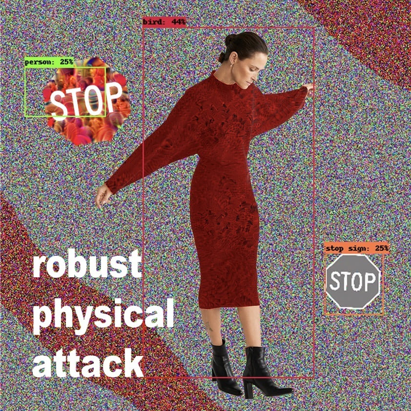
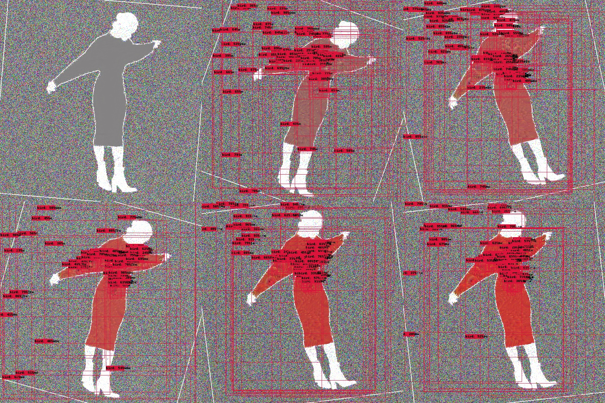
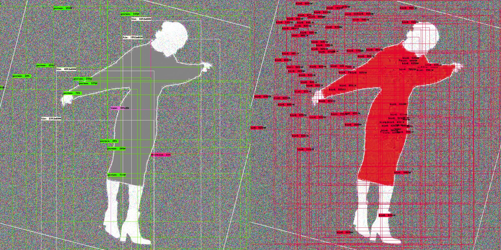

Physical Attack: Adversarial Fashion for Escaping Machine Vision
A wearable adversarial pattern designed to mislead object-detection systems.
Physical Adversarial Attack
Faster R-CNN
AI Defense
Expectation over Transformation (EoT)
Change-of-Variable Attack
TIME | 2020
AUTHORS | Po-Yao Wu
MOTIVATION |
This project investigates how people might evade pervasive machine-vision systems in a future where surveillance becomes fully automated and ubiquitous. Instead of attacking recognition algorithms internally, the work focuses on physical adversarial patterns—small, strategic perturbations applied to clothing that can cause detectors to misclassify humans as other objects.
The research imagines a world governed by transparent data extraction, where individuals become perfectly visible. By weaponizing adversarial machine learning techniques, the project reframes technical attacks as a form of speculative self-defense, challenging the expanding computational power that shapes behavioral control.
APPROACH |
The system adapts the ShapeShifter adversarial attack pipeline—originally designed for stop signs—to target human detection within Faster R-CNN models. A mask is applied to isolate clothing regions while preserving the head and limbs. Through iterative training, the clothing texture gradually evolves into a pattern that forces the model to misclassify the wearer as a different object—most successfully, a “bird.”
Central to the method is the Expectation over Transformation (EoT) technique, which simulates lighting, angle, distance, and scale variations to ensure the perturbation remains effective in real physical environments. After 250 training iterations, confidence scores shift from “person” to “bird,” demonstrating stable convergence. Future improvements include higher-resolution pattern generation and training with diverse human poses to produce wearable adversarial fabrics capable of functioning both as protection and as a speculative aesthetic.
